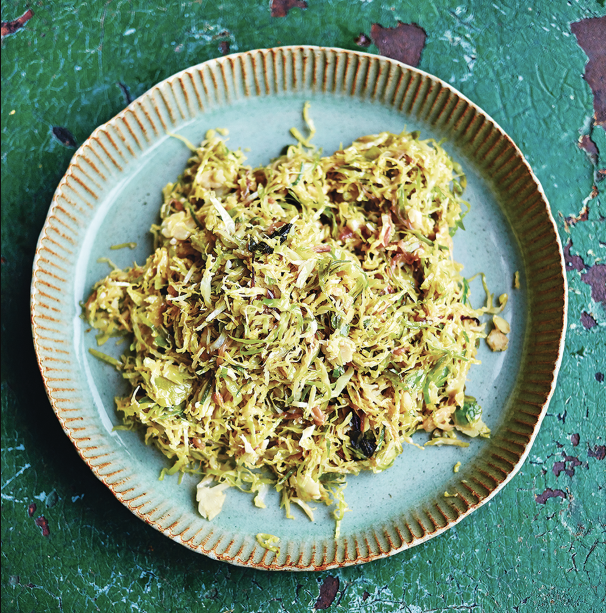

приготовление:
-
Срезать основания у 500 г брюссельской капусты и убрать повреждённые внешние листья.
-
Очень тонко нашинковать капусту. Удобнее всего использовать кухонный комбайн с диском-слайсером.
-
Хорошо разогреть большую сковороду, добавить 20 г сливочного масла и 1 ст. л. оливкового масла.
-
Добавить капусту и жарить на среднем или сильном огне 5–7 минут, часто перемешивая. Капуста должна стать мягче и местами подрумяниться, но не превратиться в кашу.
-
Добавить измельчённый 1 зубчик чеснока и готовить ещё 30 секунд.
-
Влить 2 ст. л. Worcestershire sauce, хорошо перемешать и готовить ещё 1–2 минуты.
-
Добавить чёрный перец, попробовать на соль и вмешать 1 ч. л. дижонской горчицы.